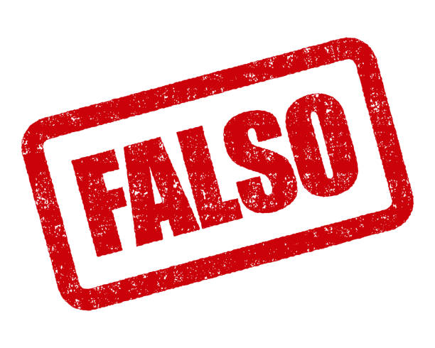

Esta sería la importancia de un h1
Ahora, este es el elemento 'p' el cual se utiliza para escribir un parrafo debajo de cada elemento 'h' que se construya
Ahora, este es el elemento 'p' el cual se utiliza para escribir un parrafo debajo de cada elemento 'h' que se construya
Se puede empezar el texto acá Presione aquí para poder abrir youtube y seguirlo al final del hipervínculo
¿Es verdad que todos amamos a los negros?"
Probando la apertura de una nueva ventana... Juegue mas bien
